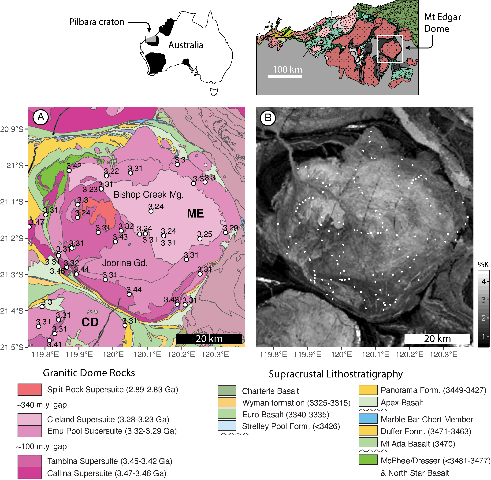
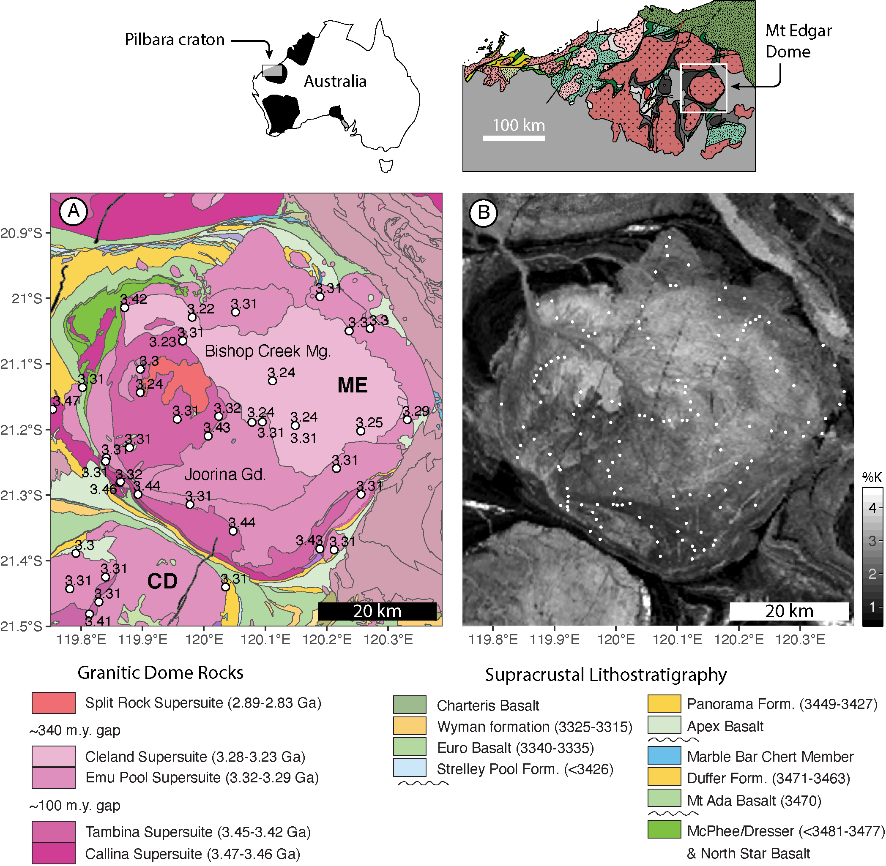

Structural Geology @ Hamilton College


Structural Geology, Archean Tectonics, Statistics
I have broad interests in how continental crust accomodates deformation in different tectonic contexts. My approach to stuying deformation processes integrates field mapping, statistics, microstructural analysis and quantitative laboratory techniques such as electron backscatter diffraction (EBSD). I also am part of the team working on the StraboSpot digital data system. I currently and working to design new structural geology and sedimentology field apps for iPadOS.
Quantitative Structural Geology
 

By what mechanisms were large structural domes emplaced into Earth's early crust? What is the relationship between plutonism, plate tectonics, crustal flow, and shear/fault localization during the deformation of continental crust? How do rocks partition strain from the field to the crystal lattice scales? These are among the questions that motivate my research. My current research investigates a Paleoarchean granitic dome in Western Australia's Pilbara craton. The Mt Edgar dome is one of the archetypal Paleoarchean domes and has been pointed to as the strongest evidence for volumninous granitic diapirism in the early Earth. My structural work in the Pilbara tests this hypothesis by studying the internal structure of the Mt Edgar dome using a deformation proxy tequnique, the anisotropy of magnetic susceptibility (AMS), detailed field and microstrctural observation around the sheared margin of the Mt Edgar dome, and statistical analysis of field measurements.
In the summer of 2018 I was joined in the field by two Geoscience majors from UW Madison, Casey and Rex. The three of us spent six weeks mapping large scale folds in the Warrawoona syncline. Both Rex and Casey finished senior theses in Spring 2019 and 2020, respectively.
Statistical Analysis
I have a deep interest in the statistical treatment of high-dimensional structural geology data (like foliation-lineation pairs, strain ellipsoids). The advent of methods and tools for analyzing structural geology data statistically nicely coincides with a trend towards larger datasets, especially as new databases like StraboSpot come online. I have pioneered workflows and am involved with developming to statistical techniques with collaborators.
The structural geology community is in the middle of an exciting shift towards using statistical techniques to get more out of complex datasets, and recently developed techniques and software tools are making it possible to treat high-dimensional data holistically. My goal is to use these new statistical and software tools to push the boundaries of how structural geologists use statistics, and to allow others to do the same by publishing my R scripts on this website.
Datascience for field geologists

An exciting new frontier for structural geology and other field-based geologic disciplines is the emergence of large, open-source databases for geologic data. I have been working on the StraboSpot digital data system development team for the past two years, designing the next generation of iOS field tools and helping to lead testing field trips with experts to get feedback and input from the broader community.
I am also spearheading an effort to write statistical and querying tools directly into the front end of the StraboSpot system so that field geologists can do on-the-fly statistical analyses during fieldwork.